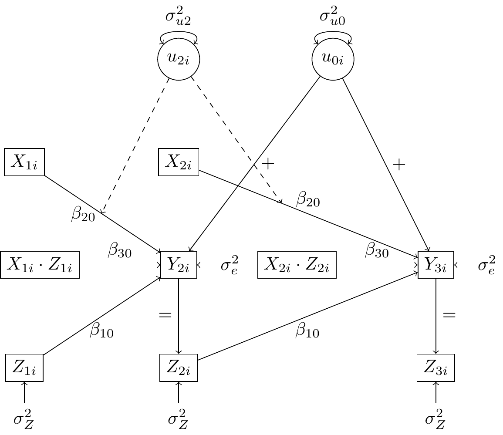

DGMs of Qian et al. (2020) - Part 2: With Treatment
1 Main Simulation of Qian et al. (2020): With Treatment and with Translated Notation
1.1 Simulations
In the simulation, we considered three generative models (GMs), all of which have an endogenous covariate. In the first two GMs, the endogenous covariate \(Z_{ti}\) equals the previous outcome \(Y_{ti}\) plus some random noise, so the conditional independence assumption (10) is valid. In GM 3, the endogenous covariate depends directly on \(u_{0i}\), violating assumption (10). The details of the generative models are described below. We follow the notation of Schoot et al. (2017), which is largely based on that of Raudenbusch and Bryk (2002).
1.1.1 Generative Model 1
In GM1, we considered a simple case with only a random intercept and a random slope for \(X_{ti}\), so that \(g_0(H_{ti}) = g_1(H_{ti}) = 1\). WHAT DOES THIS IMPLY? The outcome is generated according to the following repeated-observations or within-person model (level 1)
\[ Y_{(t+1)i} = \pi_{0i} + \pi_{1i} Z_{ti} + \pi_{2i} X_{ti} + \pi_{3i} X_{ti} Z_{ti} + e_{(t+1)i} \]
with the person-level or between-person model (level 2)
\[ \pi_{0i} = \beta_{00} + u_{0i} \quad \text{with} \quad u_{0i} \sim \mathcal{N}(0, \sigma^2_{u_0}) \]
\[ \pi_{1i} = \beta_{10} \]
\[ \pi_{2i} = \beta_{20} + u_{2i} \quad \text{with} \quad u_{2i} \sim \mathcal{N}(0, \sigma^2_{u_2}) \]
\[ \pi_{3i} = \beta_{30} \]
By substitution, we get the single equation model:
\[ Y_{(t+1)i} = \pi_{0i} + \pi_{1i} Z_{ti} + \pi_{2i} X_{ti} + \pi_{3i} X_{ti} Z_{ti} + e_{(t+1)i} \\ = (\beta_{00} + u_{0i}) + \beta_{10} Z_{ti} + X_{ti} (\beta_{20} + u_{2i}) + \beta_{30} X_{ti} Z_{ti} + e_{(t+1)i} \\ = \beta_{00} + \beta_{10} Z_{ti} + u_{0i} + X_{ti} (\beta_{20} + \beta_{30} Z_{ti} + u_{2i}) + e_{(t+1)i} \]
The random effects \(u_{0i} \sim N(0, \sigma_{u0}^2)\) and \(u_{2i} \sim N(0, \sigma_{u2}^2)\) are independent of each other. The covariate is generated as \(Z_{i1} \sim N(0, 1)\), and for \(t \geq 2\),
\[ Z_{ti} = Y_{ti} + N(0, 1). \]
The randomization probability \(p_t\) is constant at \(1/2\). Thus, \(X_{ti} \sim \text{Bernoulli}(0.5) \quad \text{for} \quad i = 1, \ldots, N \quad \text{and} \quad t = 1, \ldots, T\). In other words, each individual has an independent 50% chance of receiving the treatment at each time point. The exogenous noise is \(e_{(t+1)i} \sim N(0, \sigma_e^2)\).
1.1.2 Generative Model 2
In GM2, we considered the case where \(g_0(H_{ti}) = g_1(H_{ti}) = (1, Z_{ti})\), which implies that the random effects \(u_{0i}\) and \(u_{1i}\) are modeled as depending only on a baseline level and the current covariate \(Z_{ti}\). CHECK IF THIS IS TRUE. In addition, the randomization probability is time-varying. The outcome is generated according to the same repeated-observations model presented in GM1. However, the person-level model is different:
\[ \pi_{0i} = \beta_{00} + u_{0i} \quad \text{with} \quad u_{0i} \sim \mathcal{N}(0, \sigma^2_{u_0}) \]
\[ \pi_{1i} = \beta_{10} + u_{1i} \quad \text{with} \quad u_{1i} \sim \mathcal{N}(0, \sigma^2_{u_1}) \]
\[ \pi_{2i} = \beta_{20} + u_{2i} \quad \text{with} \quad u_{2i} \sim \mathcal{N}(0, \sigma^2_{u_2}) \]
\[ \pi_{3i} = \beta_{30} + u_{3i} \quad \text{with} \quad u_{3i} \sim \mathcal{N}(0, \sigma^2_{u_3}) \]
By substitution, we get the single equation model:
\[ Y_{(t+1)i} = \beta_{00} + \beta_{10} Z_{ti} + u_{0i} + u_{1i} Z_{ti} + X_{ti} \left( \beta_{20} + \beta_{30} Z_{ti} + u_{2i} + u_{3i} Z_{ti} \right) + e_{(t+1)i}. \]
The random effects \(u_{ji} \sim N(0, \sigma_{u_j}^2)\), for \(0 \leq j \leq 3\), are independent of each other. The covariate is generated as \(Z_{i1} \sim N(0, 1)\), and for \(t \geq 2\),
\[ Z_{ti} = Y_{ti} + N(0, 1). \]
The randomization probability depends on \(Z_{ti}\):
\[ p_t = P(X_{ti} = 1 \mid H_{it}) = 0.7 \cdot IF(Z_{ti} > -1.27) + 0.3 \cdot IF(Z_{ti} \leq -1.27), \]
where \(IF(\cdot)\) represents the indicator function, and the cutoff \(-1.27\) was chosen so that \(p_t = P(X_{ti} = 1 \mid H_{it})\) equals 0.7 or 0.3 for about half of the time. In other words, if the value for the covariate for any given person and timepoint is above the cutoff, the probability of receiving the treatment \(p_t\) is 0.7; otherwise, it is 0.3. Accordingly, \(X_{ti} \sim \text{Bernoulli}(p_t)\) for \(i = 1, \ldots, N\) and \(t = 1, \ldots, T\). The exogenous noise is \(e_{(t+1)i} \sim N(0, \sigma_e^2)\).
1.1.3 Generative Model 3
GM3 is the same as GM1, except that the covariate \(Z_{ti}\) depends directly on \(u_{0i}\):
\[ Z_{i1} \sim N(u_{0i}, 1), \quad Z_{ti} = Y_{ti} + N(u_{0i}, 1) \text{ for } t \geq 2. \]
We chose the following parameter values:
\[ \beta_{00} = -2, \quad \beta_{10} = -0.3, \quad \beta_{20} = 1, \quad \beta_{30} = 0.3, \]
\[ \sigma_{u0}^2 = 4, \quad \sigma_{u1}^2 = \frac{1}{4}, \quad \sigma_{u2}^2 = 1, \quad \sigma_{u3}^2 = \frac{1}{4}, \quad \sigma_e^2 = 1. \]
1.1.4 Graphical representations of Data Generating Models
So the DAG for the first couple observations of GM1 looks like
The red arrows here show the biased paths after controlling for the covariate \(Z_{it}\).
Or we can display it as a path diagram, where parameter values are displayed and moderation is shown by the dashed arrow.
We can make a couple observations from this path diagram:
- Contrary to the DAG, this path diagram shows the moderation effect (1) of \(Z_{it}\) on the relationship between \(X_{it}\) and \(Y_{ti+1}\) and (2) of \(u_{2i}\) on the relationship between \(Z_{ti}\) and \(Y_{(t+1)}\).
- Similar to the example without treatment in section 2.2, the covariate \(Z_{it}\) is determined by the previous value of the outcome \(Y_{it}\)—which makes it an endogenous time-varying covariate.
1.1.5 Data Generating and Estimation
The data generating process for this model is given by
\[ Y_{(t+1)i} = (\beta_{00} + u_{0i}) + \beta_{10} Z_{ti} + X_{ti} (\beta_{20} + u_{2i}) + \beta_{30} X_{ti} Z_{ti} + e_{(t+1)i} \]
2 Appendix
2.1 Original Section from Qian et al. (2020): “4. Simulation”
In the simulation, we considered three generative models (GMs), all of which have an endogenous covariate. In the first two GMs, the endogenous covariate \(X_{it}\) equals the previous outcome \(Y_{it}\) plus some random noise, so the conditional independence assumption (10) is valid. In GM 3, the endogenous covariate depends directly on \(b_i\), violating assumption (10). The details of the generative models are described below.
In GM1, we considered a simple case with only a random intercept and a random slope for \(A_{it}\), so that \(Z_{i(t_0)} = Z_{i(t_2)} = 1\) in model (7). The outcome is generated as:
\[ Y_{it+1} = \alpha_0 + \alpha_1 X_{it} + b_{i0} + A_{it} (\beta_0 + \beta_1 X_{it} + b_{i2}) + \epsilon_{it+1}. \]
The random effects \(b_{i0} \sim N(0, \sigma_{b0}^2)\) and \(b_{i2} \sim N(0, \sigma_{b2}^2)\) are independent of each other. The covariate is generated as \(X_{i1} \sim N(0, 1)\), and for \(t \geq 2\),
\[ X_{it} = Y_{it} + N(0, 1). \]
The randomization probability \(p_t\) is constant at \(1/2\). The exogenous noise is \(\epsilon_{it+1} \sim N(0, \sigma_\epsilon^2)\).
In GM2, we considered the case where \(Z_{i(t_0)} = Z_{i(t_2)} = 1\), with time-varying randomization probability. The outcome is generated as:
\[ Y_{it+1} = \alpha_0 + \alpha_1 X_{it} + b_{i0} + b_{i1} X_{it} + A_{it} (\beta_0 + \beta_1 X_{it} + b_{i2} + b_{i3} X_{it}) + \epsilon_{it+1}. \]
The random effects \(b_{ij} \sim N(0, \sigma_{b_j}^2)\), for \(0 \leq j \leq 3\), are independent of each other. The covariate is generated as \(X_{i1} \sim N(0, 1)\), and for \(t \geq 2\),
\[ X_{it} = Y_{it} + N(0, 1). \]
The randomization probability depends on \(X_{it}\):
\[ p_t = 0.7 \cdot 1(X_{it} > -1.27) + 0.3 \cdot 1(X_{it} \leq -1.27), \]
where \(1(\cdot)\) represents the indicator function, and the cutoff \(-1.27\) was chosen so that \(p_t\) equals 0.7 or 0.3 for about half of the time. The exogenous noise is \(\epsilon_{it+1} \sim N(0, \sigma_\epsilon^2)\).
GM3 is the same as GM 1, except that the covariate \(X_{it}\) depends directly on \(b_i\):
\[ X_{i1} \sim N(b_{i0}, 1), \quad X_{it} = Y_{it} + N(b_{i0}, 1) \text{ for } t \geq 2. \]
We chose the following parameter values:
\[ \alpha_0 = -2, \quad \alpha_1 = -0.3, \quad \beta_0 = 1, \quad \beta_1 = 0.3, \]
\[ \sigma_{b0}^2 = 4, \quad \sigma_{b1}^2 = \frac{1}{4}, \quad \sigma_{b2}^2 = 1, \quad \sigma_{b3}^2 = \frac{1}{4}, \quad \sigma_\epsilon^2 = 1. \]
2.2 Translation of Notation
In the table below, we will provide the translation of original notation in Qian et al. (2020) to the notation by Schoot et al. (2017). This notation in turn, is very similar to and likely based on the notation by Raudenbush and Bryk (2002). However, rather than representing the random effects with an \(r\), the notation by Schoot et al. (2017) uses \(u\).
| Parameter/variable | Qian et al. (2020) | Schoot et al. (2017) |
|---|---|---|
| Covariate | \(X_{it}\) | \(Z_{ti}\) |
| Randomized Treatment | \(A_{it}\) | \(X_{ti}\) |
| Outcome | \(Y_{it+1}\) | \(Y_{(t+1)i}\) |
| Fixed intercept | \(\alpha_0\) | \(\beta_{00}\) |
| Random intercept | \(b_{i0}\) | \(u_{0i}\) |
| Fixed slope for covariate | \(\alpha_1\) | \(\beta_{10}\) |
| Random slope for covariate | \(b_{i1}\) | \(u_{1i}\) |
| Fixed slope of treatment | \(\beta_0\) | \(\beta_{20}\) |
| Random slope for treatment | \(b_{i2}\) | \(u_{2i}\) |
| fixed interaction effect of covariate and treatment | \(\beta_1\) | \(\beta_{30}\) |
| Random interaction effect of covariate and treatment | \(b_{i3}\) | \(u_{3i}\) |
| Error term (exogenous noise) | \(\epsilon_{it+1}\) | \(e_{(t+1)i}\) |
| Randomization probability | \(p_t\) | \(p_t\) |
| Residual variance | \(\sigma^2_{\epsilon}\) | \(\sigma^2_{e}\) |
| Random intercept variance | \(\sigma^2_{b0}\) | \(\sigma^2_{u0}\) |
| random slope variance for covariate | \(\sigma^2_{b1}\) | \(\sigma^2_{u1}\) |
| Random slope variance for treatment | \(\sigma^2_{b2}\) | \(\sigma^2_{u2}\) |
| Random slope variance for interaction | \(\sigma^2_{b3}\) | \(\sigma^2_{u3}\) |
2.3 Explanation versus Prediction
In het voorbeeld van Diggle et al. (2002) wat we vorige week hebben besproken, werd vermeld dat een cross-sectionele relatie tussen \(X_{it}\) en \(Y_{it}\) van interesse kan zijn met longitudinale data als voorspellen het doel is:
“In many applications the cross-sectional association between Xit and Yit is of substantive interest. For example, in assessing the predictive potential of biomarkers for the detection of cancer, the accuracy of a marker is typically characterized by the cross-sectional sensitivity and specificity. Although alternative predictive models may be developed using longitudinal marker series, these models would not apply to the common clinical setting where only a single measurement is available.” (Diggle et al., 2002, p. 256)
Daarentegen legt Qian et al. (2020) juist de nadruk op de voordelen van mixed linear models om tegelijkertijd ook individuele verschillen te kunnen voorspellen, waarbij de focus meer ligt op causaliteit:
“A particularly appealing feature of random effects models is the ability to predict person-specific random effects, which enables quantitative characterization of between person heterogeneity due to unobserved factors (Schwartz and Stone, 2007, Bolger and Laurenceau, 2013). Understanding such heterogeneity can bring forth new scientific hypotheses for further studies. In addition, the random effects provide a model for the within-person dependence in the time-varying outcome, which improves efficiency in parameter estimation.” (Qian et al., 2020, p. 376)
2.4 Differences: DAGs and Path Diagrams
As mentioned by Ellen in the last meeting (17-10):
“Conventional DAGs do not only represent main effects but rather the combination of main effects and interactions. Once you have drawn your DAG, you already assume that any variables pointing to the same outcome can modify the effect of the others pointing to the same outcome.” (stackexchange)